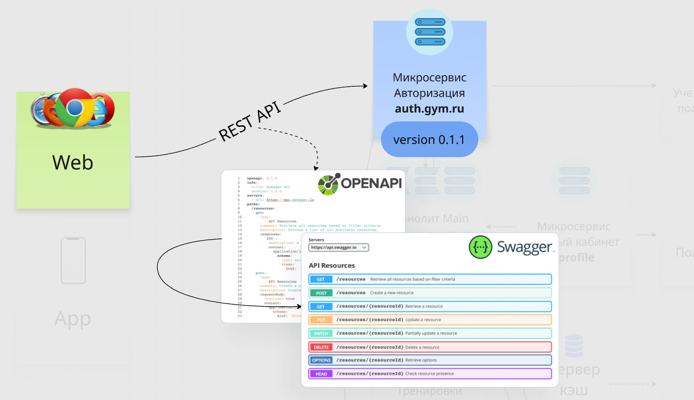

В предыдущем уроке ты узнал, что компоненты клиент-серверной архитектуры общаются между собой. Существуют определенные правила и рекомендации по поводу этого общения. Рассмотрим архитектурный стиль REST и более строгий протокол SOAP, разберем что такое REST API, что такое CRUD-операции, а в следующих уроках посмотрим другие типы общения.
REST — самый распространенный архитектурный подход (стиль) к общению, набор рекомендаций как лучше вести общение через HTTP протокол, то есть от них можно отклоняться и видоизменять. Пример: использование HTTP методов (глаголов) по своему усмотрению (об этом ниже).
REST API / RESTful API — API (общение) построенное на принципах REST.
Что важно знать:
Краткое сокращение 4 (5) основных типов операций с данными:
– Create (создание) — по ресту это глагол POST
– Read (чтение) — глагол GET
– Update (обновление) — глаголы PUT или PATCH
– Delete (удаление) — глагол DELETE
– List (список) — иногда встречается расширение стандартного CRUD до CRUDL. Тот же GET, но не к конкретному объекту, а к списку объектов
На собесе могут спросить: представь, у тебя есть личный кабинет пользователя. Какие основные крудовские проверки ты бы провел? Ответить можно так:
/register/profile
SOAP — протокол обмена структурированными сообщениями. Это уже не рекомендации, а строгие правила как компонентам следует общаться, может использовать любой протокол прикладного уровня (не только HTTP).
Что важно знать:
На данный момент SOAP устаревший протокол, и большинство проектов использует рест. Однако на 10-15% собесов поощряется знания и опыт работы с SOAP, обычно это энтерпрайзы и банки. На практике вряд ли придется работать с SOAP.
Для более экспертного понимания SoapUI, SOAP и его отличий с REST, для закрепления принципов работы протоколов и API, посмотри видео: